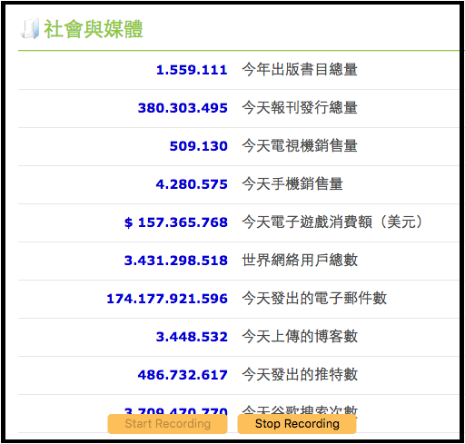
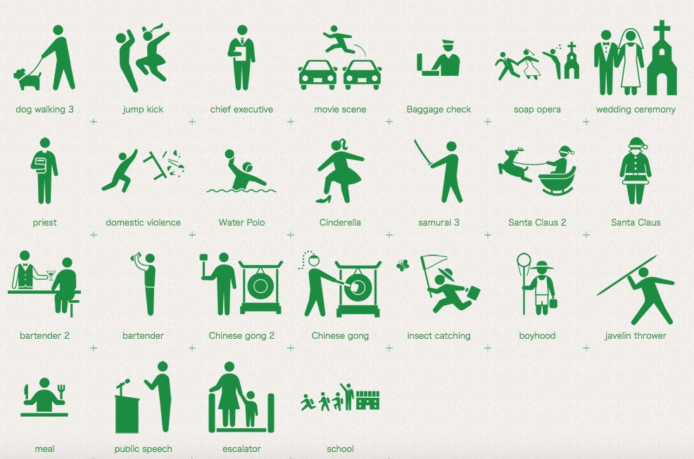
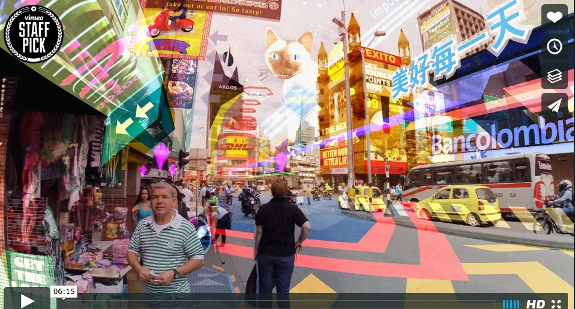
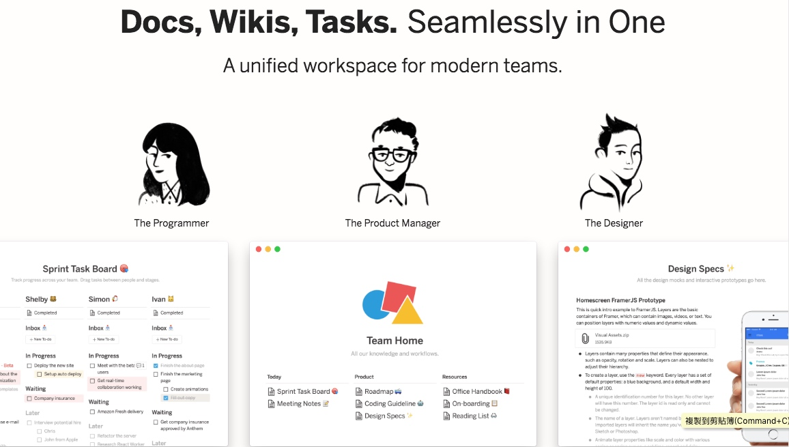
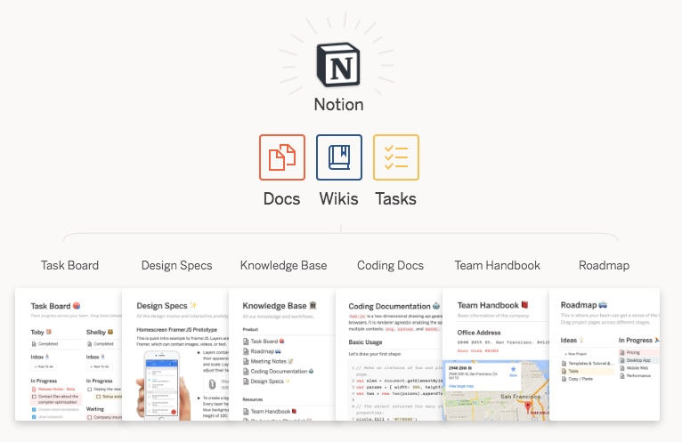
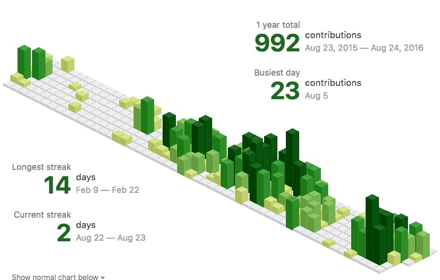
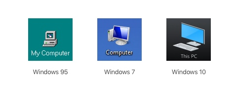

MoClippings #10 人人都是道長！！！
發刊日 : 2016/08/01 - 2016/08/30
MurMur
![[拿著平板邊抓怪其實是中國人發明的]](/Clippings/2016/MoClippings-10/14711500928544.jpg "[拿著平板邊抓怪其實是中國人發明的]")
生活藝文
行銷推廣
- 全聯經濟美學
- 全聯小編究竟有多強？臺灣通路業的社群修羅場！
- 全聯真正強大的是：它的內容可以走出全聯自己的社群，它的廣告、貼文會在群眾、意見領袖、媒體社群中被分享、被討論。
- 一週內，全聯自身跟中元相關的發文不過才5篇，最後卻造成額外216篇的相關討論！無論全聯是否主動布局這些媒體曝光，全聯的內容的確引起廣大迴響。這些在外部社群造成的聲量總合，遠超過全聯粉絲專頁本身的力量。
- 聲量不見得一定要完全發生在自己的社群，而是思考怎麼讓自己在整個社群大環境中造成最大聲量。
- Worldometers - 世界實時統計數據
- 
專案管理
[筆記] <羅輯思維> 183 怎麼樣成為一個高手 « 肺文
如何有效學習(練習):
- 大量知識套路、方法論 (類似在思維中形成programming 中各種 function功能)
- 針對性，大量重複練習
- 持續地做你不會做的事
學習歷程：
- 舒適區: 舒適區相當於最熟悉的環境(不限地理上或是心理上)，熟悉的技術、人事物等等，可以直接進入自動化歷程的區域。
- 學習區: 介於恐慌與舒適之間，進入恐慌區的適應歷程，一定伴隨痛苦、失控、不安、焦慮及不穩定。
- 恐慌區: 完全不熟悉的領域與技術或環境。
- 未來的兩種人:
- 第一類人：躺在工具產生的便利性上睡大覺，享受，透過互聯網弱化自己的人。
- 第二類人：帶著這個工具產生的新可能，去探索文明的新邊疆，透過互聯網讓自己成長的人。
反思：失敗不是成功之母，成功才是 « Alex’s Blog
- 不是只要失敗就一定有幫助
「好的失敗」下了三大特性：
- 即時，一旦不對就馬上找人給你指正
- 對事不對人
- 這個的錯誤代價一定要自己承受得起
* 寫程式來說，更特別是這麼一回事
1. 即時知道錯誤 (Compile一錯誤馬上就出現)
2. 對事不對人 （你寫錯code沒做好跟你有錢與否一點關係都沒有）
3. 自己承受得起 （寫錯code很正常，改正就好了）
* 一個產品要能成長，包含以下重點：
1. 以建立好的失敗可能性打造產品，不以完美為前提（因為你的客人跟你預先想像的會差很多）
2. 平日大量的閱讀、與前輩詢問，吸收別人的好的失敗經驗
3. 反覆、重複的練習，確保自己曾經遇過的失敗不要再遇到（學更好的程式寫法優化、建立更好的供應商尋找條件）
- 如何開始一個最小可行產品MVP « Alex’s Blog
- 把過去的你當成目標客群，想想你過去最願意付錢解決的問題，用他當題目
- 找你周遭身邊都遇到的問題，而你也有解決能力
- 一開始就得想著收費，毛利率一定要有40%以上
- 有了第一批假設的客戶，確認市場有多大
- 用套版服務，千萬別自己硬幹工程工作就開始賣，除非你能承受這個開發成本
資訊知事
.NET Walker: 把程式寫好容易，把程式寫到能賣出去，很難…
- 35歲以前，我幾乎都在思考怎麼把程式寫得更好，但過了35歲以後我發現，對『好』最簡單有力的定義，就是看看用戶願不願意，掏出自己的現金來買你寫出的軟體，沒別的，僅此而已。
Human Pictogram 2.0 - free vector human pictograms - - 可以免費使用的人類圖，有各種動作
- 
HYPER-REALITY on Vimeo - 這部影片將 AR 完全的融入生活中，還蠻有趣的，可以從 AR 的畫面中去體驗，未來可能怎麼樣。
- 
-
- Slide - 全台灣最宅的科科科技如何利用 MogileFS 儲存數千萬個音樂檔案
- 儲存伺服器超過 75 台。總硬碟超過 2,300 顆。總儲存空間超過 10 PB。使用 8 個機櫃。
寶可夢 (Pokemen Go) 相關新聞及討論：
教育：
附加服務：
行銷：
資訊技術：
- 如何在mac上運行pokemon bot « NicLin Dev
- jabbink/PokemonGoBot: Bot that plays Pokemon Go
- Ar1i/PokemonGo-Bot
- Poke Radar for Pokemon GO - Maps, Finder, Search, Locations
- duhminick/PokeNurse: 💉 A tool for Pokémon Go to aid in transferring and evolving Pokémon - 有點屌，可以大量傳送跟進化 pokemon
- PoGoBag
- Pokemon Go 稀有寶可夢位置自動通報 【教學】要抓卡比獸可考慮看下去 | gameapps
產品：
工具軟體
- MDwiki - Markdown based wiki done 100% on the client via javascript - 一個使用 MarkDown 語法寫 Wiki 的工具。
- HyperTerm JS/HTML/CSS Terminal - 一個使用 JavaScript 所編寫而成的 Terminal 工具。
- JSON Resume - 用 JSON 格式書寫自己的履歷
- Wowstick电动螺丝刀 1fs - 小米推出的螺絲起子，很小看起來也很方便。
- Hubot 聊天機器人簡單架設教學
- SSD VPS Servers, Cloud Servers and Cloud Hosting by Vultr - Vultr.com - 同樣採用 SSD 的 VPS Server ，同樣價錢，容量都比 DigitalOcean 多一些。
- 給不熟悉 command line 而想要在 Mac 或 Linux 上開發程式的人。內容涵蓋從最基礎的「如何打開終端機」到常用 command line 指令、使用 brew / apt-get 安裝套件, 以及基本的 git 使用。 - 適合初學 command line mode 的人學習查看。
Notion – Docs, wikis, tasks, seamlessly in one. A unified workspace for modern teams. - 一個很適合小型團隊使用的共同工作系統。
- 
- 
jasonlong/isometric-contributions: Render an isometric pixel art version of your contribution graph in Chrome and Safari. - 一個 chrome 套件，可以把 GitHub 的工作樹變成立體樣式。
- 
GIT 學習資源：
Git-it Guide - 互動式的 GIT 指令教學
Learn Git Branching - 互動式 GIT 指令教學

網站開發
UI/UX
- Is this my interface or yours? — Medium - 什麼時候用「電腦」、什麼時候用「我的電腦]、什麼時候用「你的電腦」？
- 
心法
- 图说设计模式 — Graphic Design Patterns
- 超越技術的階段 | iThome
- 成功程式設計師凌駕於他人的五個關鍵思維 | Soft & Share
- 對於陌生的代碼會毫不畏懼地下去了解
- 精通解Bug
- 投資可省時的工具
- 最佳化重複性動作的速度
- 從系統級高度來思考
- Airbnb 資深工程師分享：怎樣才是正確、有效的 code review | TechOrange
-
好程式碼就像好的笑話一樣，不需要向別人額外解釋。對程式碼質量進行測試：讓其他開發者讀一下，看看他們能不能說出這段程式碼是做什麼的；如果你看不下去了，很急迫地要插嘴解釋，那程式碼質量還不夠好。
Good code is its own best documentation — Free Code Camp
“Good code is its own best documentation” — Steve McConnell
PHP
- Day #27 - From Apprentice To Artisan: 解耦合處理程序及單元測試 by 閃亮亮 - YouTube
- 深入探討依賴注入 | 點燈坊
- Laravel database extension:
- PHPCon China 2016大会专题(视频+PPT)-PHP China开发者社区-最棒的PHP中文社区 - PHPConf China 2016 的相關簡報、影片分享。
- Alexia/php7mar: PHP 7 Migration Assistant Report (MAR) - 協助 PHP 5 升級到 PHP 7 的工具，可以幫助查出需要修改的地方，並且列出文件。
學 Laravel 一定要知道的 Restful Resource - HackMD
Route::resouce('user', 'UserController');12345678Route::resource(‘user’, ‘UserController’);/user => index(GET)/user/create => create(GET)/user => store(POST)/user/{id} => show(GET)/usr/{id}/edit => edit(GET)/user/{id} => update(PUT/PATCH)/user/{id} => destroy(DELETE)
系統架構
- Load Balancing Websocket Connections - 針對 Websocket 連線做負載平衡
- 深入浅出Cache - zhaoxi - 有赞技术团队 - 深入淺出 介紹 Cache 的使用
- HTTP 协议入门 - 阮一峰的网络日志 - 介紹從 HTTP/0.9, HTTP/1.0, HTTP/1.1 到現今 HTTP/2 的變化。
- COSCUP
- ModernWeb 2016
- [Modern Web 2016] 讓你的 PHP 開發流程再次潮起來
- StreetVoice 自動化部屬演變 - ModernWeb 2016
- 網站太多，不自動部屬會死人的。
- 自動化部屬的前提：足夠的自動化測試、工作流程、時間
- 寫程式->GitHub->TravisCI->ANSIBLE->AWS
- Ant_ModernWeb-恰如其分的MySQL設計技巧_Public.pdf
- ➊ 架構先決
- ➋ 沒有完美的架構，只有最適的架構
- ➌ 架構是演進的，預想但不過早調優
- 寫出所有人都能輕鬆讀懂的測試程式_陳鋒逸@ModernWeb2016.pdf
- Modern Web 2016 - 無痛前端測試: Slides
- JSON Web Token : O3noBLOG
- 自建 Mail System 的難度 | Gea-Suan Lin’s BLOG
- Gea-Suan Lin 提到，自己建 mail system 要做到哪些事情：
- 確認 IP (包括 IPv4/IPv6) 沒有列入任何 Open Relay 清單中。
- 確認 IP 的反解可以查出對應的正解。
- 確認 SPF 設定。
- 確認送出去的信件有 DKIM 簽名，而且 DNS 也有設上對應的設定。
- 確認 TLS 的發送與接收都正常。
- 確認 DMARC 機制正確運作。
- Gea-Suan Lin 提到，自己建 mail system 要做到哪些事情：
- Algorithm Visualizer - 將各種演算法都已 JavaScript 的方法視覺化呈現出來。無論是技術上或視覺上都值得查看。
前端
- 從Promise開始的JavaScript異步生活 - GitBook
- JavaScript variables lifecycle: why let is not hoisted - 關於 JavaScript 變數的生命週期說明，解釋 var 與 let 的差異。
- Structuring CSS in large projects — Peergrade.io — Medium - 大型專案的 CSS 結構分配。
- class 命名需要有前綴 (prefix)
- 不要使用巢狀選擇器
- 採用 BEM 命名規則。這邊比較特別的是採用 BEM 命名規則後，可允許 1 層的巢狀選擇器。這樣可以避免重複指定區塊裡面的修改器。